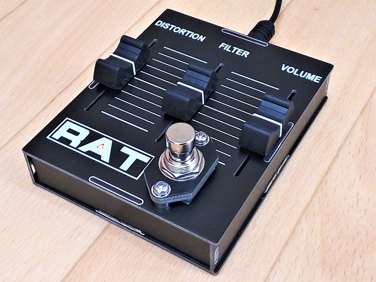
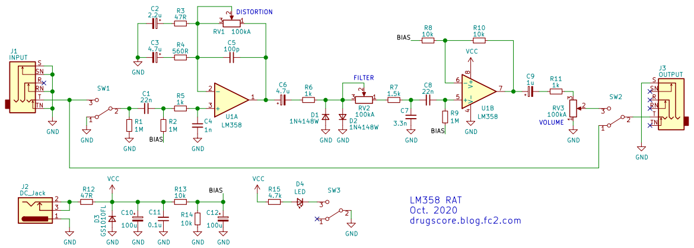
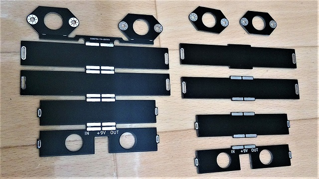
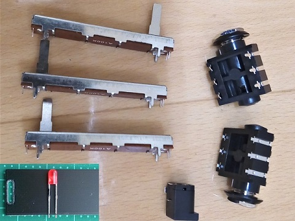
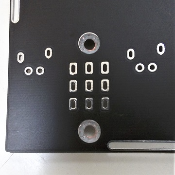
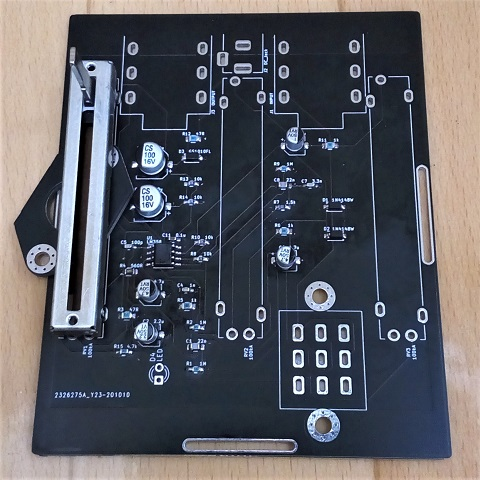
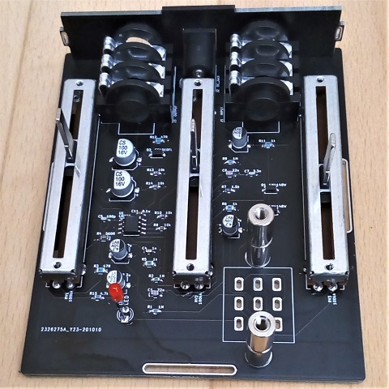
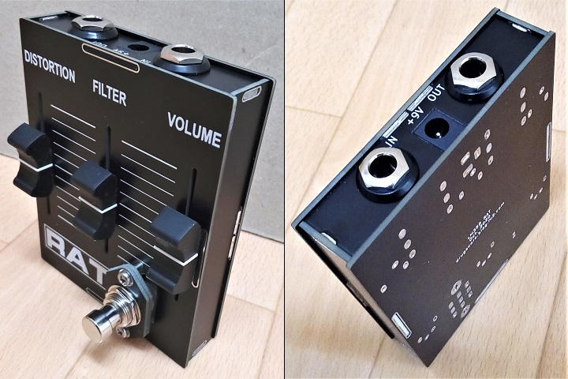

ProCo RAT（LM358・スライドボリューム仕様）
2020年12月04日 カテゴリー：自作エフェクター（アナログ）

Twitterでの1000フォロワー達成プレゼント企画として、スライドボリュームを使ったRATを製作しました。基板を組み合わせたケースを採用することにより、通常は困難なスライドボリュームの穴加工をうまく実現することができました。
本体部分の高さはフォンジャックやスライドボリュームに合わせており、2cm程度しかありません。フットスイッチはどうするか悩みましたが、何とかはみ出した状態で取り付けています。踏み込む力が底板側に加わるように工夫しました。
今までは基板やアクリル板を何枚も重ねた筐体でしたが、今回は側面が基板なので多少はノイズに強くなっていると思います。ただし強度がないので、変なところを強く踏むと壊れてしまう可能性が高いです。
▽回路図（KiCadデータはGitHubへ）

LM308は現在製造されていないため、スルーレートやGB積が似ているLM358を使うことにしました。オフセット電圧や入力バイアス電流等の違いはありますが、音にはそれほど影響しないと思います。
元のRATのFETバッファ部分はオペアンプで置き換え、2倍増幅しています。Timmy Overdriveで採用されている方式ですが、シリコンダイオード1個分でのクリッピングの場合の音量不足に備えた措置だと思われます。何だかRATと呼んでよいのかわからない感が出てきますが気にしないことにします。
出音は概ねRATっぽくなっていると思います（本物のRATが手元にないため厳密に似ているかはわかりません）。スライドボリュームの操作は、慣れていないためかそれなりに違和感があります。ほこりが入りやすい、メンテナンス性が悪い等いろいろ問題はあるのですが、とにかく見た目のインパクトが最高なのでよしとしましょう。
▽製作過程
側面の基板パーツとフットスイッチ取付パーツは一体化しています（写真左側）。カッターで基板両面から切り込みを入れて切り離し、やすりで切断面をきれいにします。基板側面部分を黒く塗っておくと見栄えがよくなります。
底面をできるだけ平面にしたいので、ジャック類の端子やLEDの足を短く切っておきます。
皿ネジを使う部分の皿もみ加工では有鉛はんだの削りカスが飛散するため、銅箔なしの穴にするべきところでした（KiCadデータは修正済）。
底面基板上のチップ部品のはんだ付け後、スライドボリュームを取り付けます。高さ調節のため基板を下に敷いて浮かしています。
ジャック類はシルク印刷に合わせて取り付けて特に問題なかったです。フットスイッチ取付用スペーサーの長さは22mm程度となっています。
筐体を仮組みした後、フットスイッチとスペーサーを固定します。そしてフットスイッチの端子をはんだ付けし、動作確認します。
最後に側面をはんだ付けで留めて完成です。